#01 – Rohbox
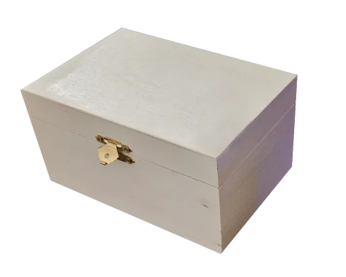
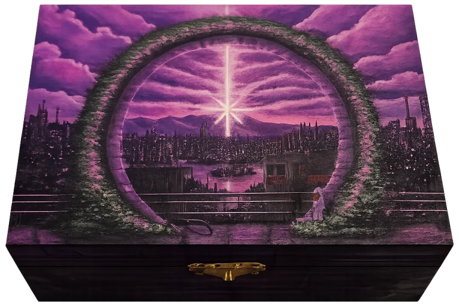
PORTAL #02
Inspiration · Neon Genesis Evangelion
Inmitten einer verlassenen Welt erscheint ein Licht, das selbst in der Dunkelheit den Weg weist. Ein Symbol für Hoffnung, Ausdauer und Neuanfang.
Unikat kaufenNahaufnahmen zeigen die feinen Pinselstriche, Texturen und Details des fertigen Unikats.
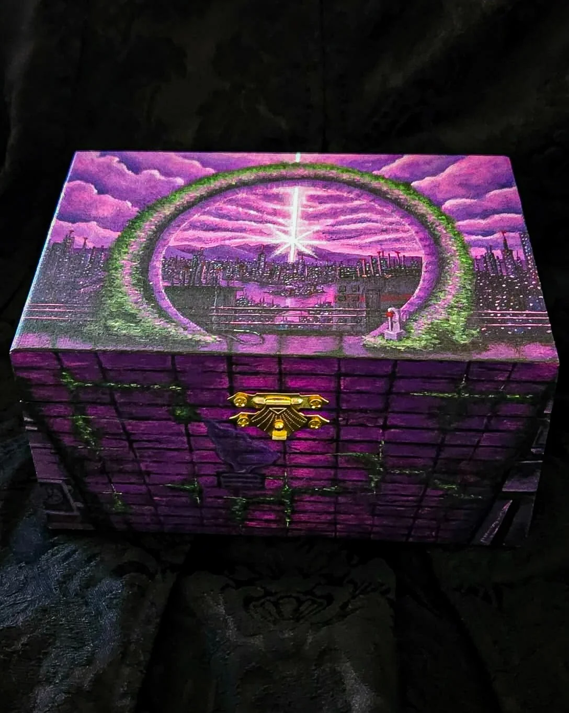
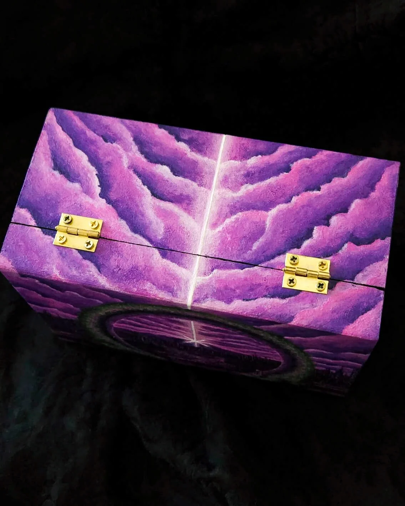
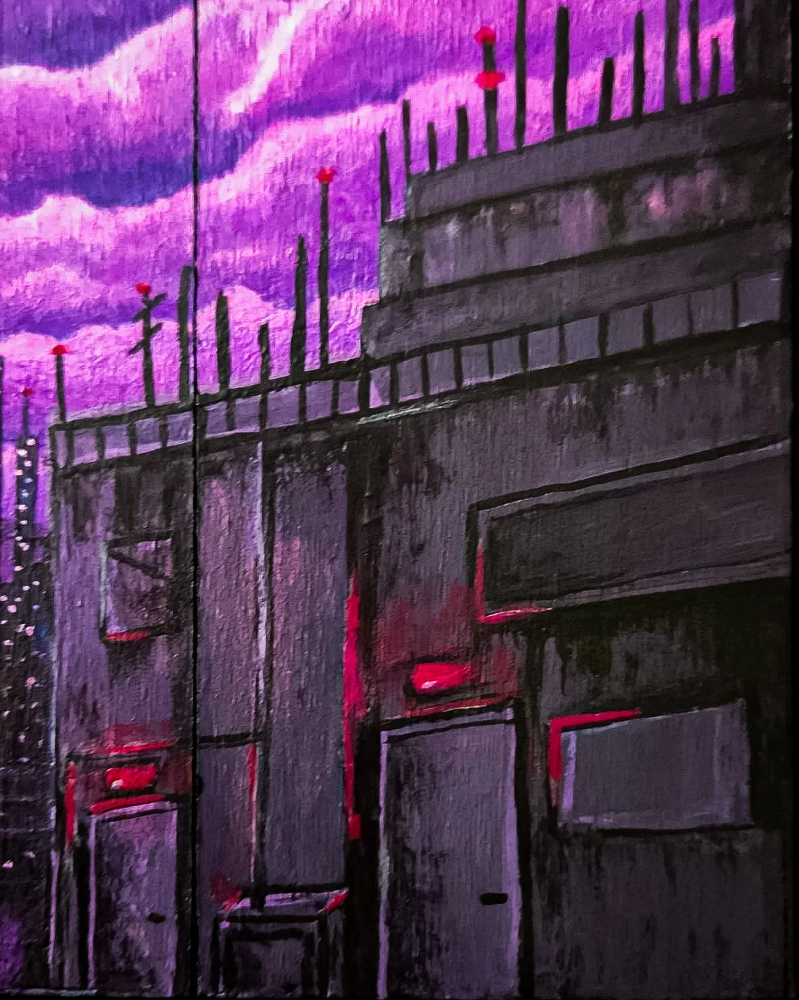
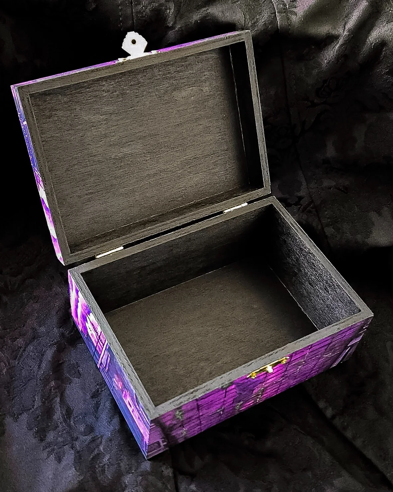
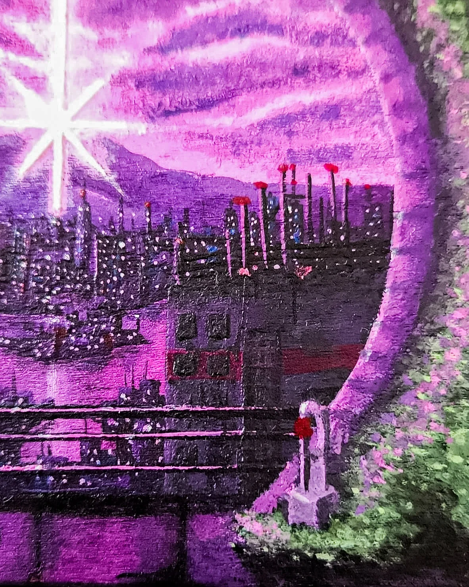
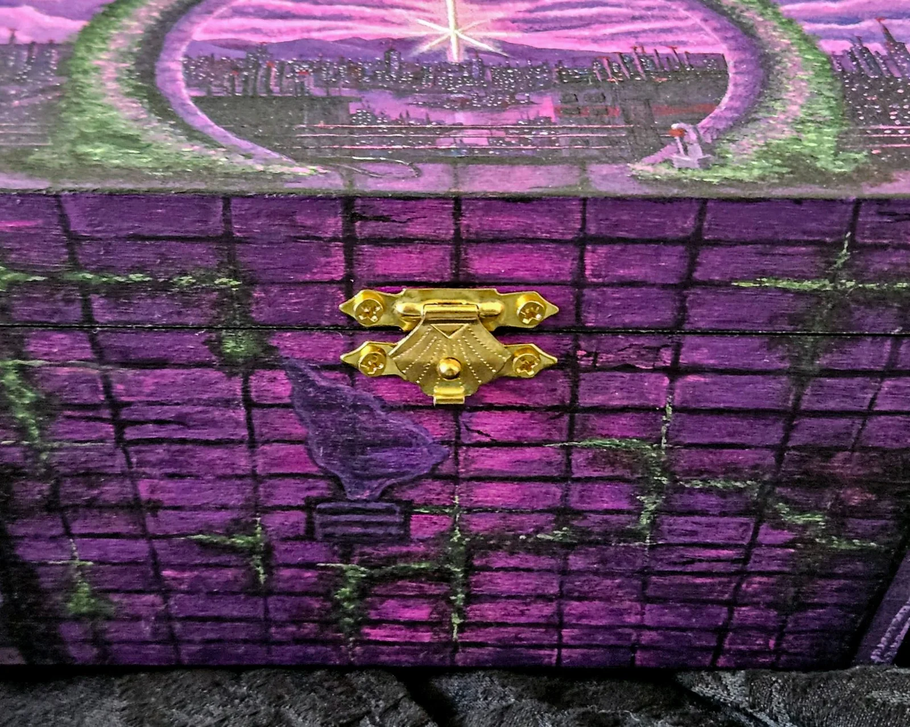
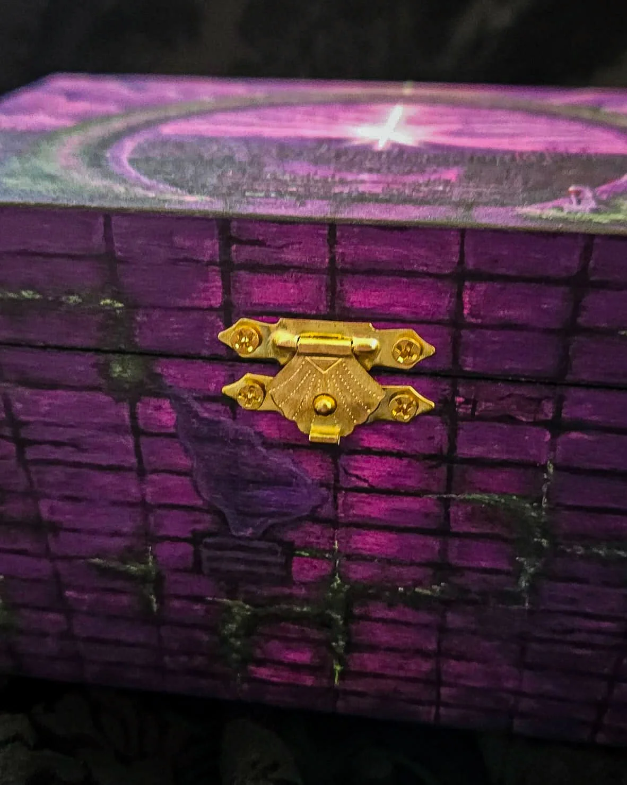
Vom unbehandelten Holz bis zum fertigen Portal. Jeder Schritt wurde von Hand gemalt und dokumentiert.
#01 – Rohbox

#02 – Skizze
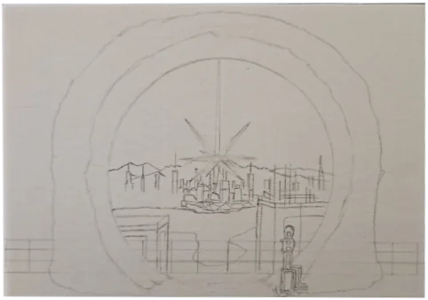
#03 – Himmel & Lichtstrahl
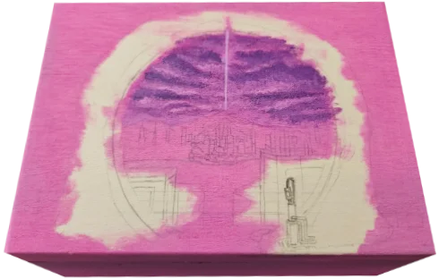
#04 – Berge & Horizont
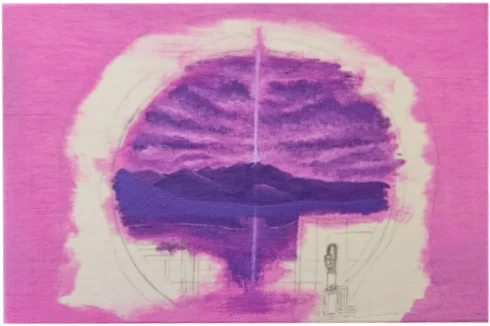
#05 – Portal & Himmel
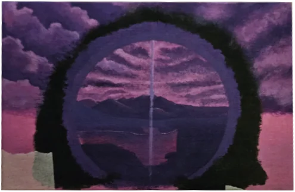
#06 – Erste Stadtstrukturen
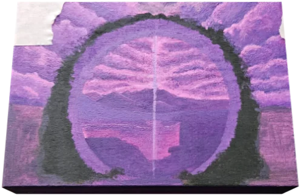
#07 – Gebäude & Tiefenwirkung
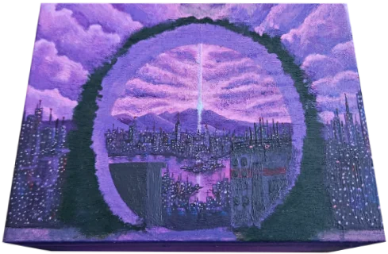
#08 – Portalrahmen & Vegetation
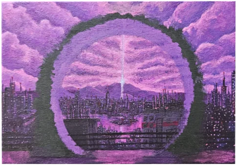
#09 – Feinarbeiten
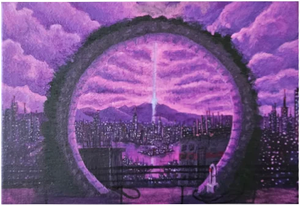